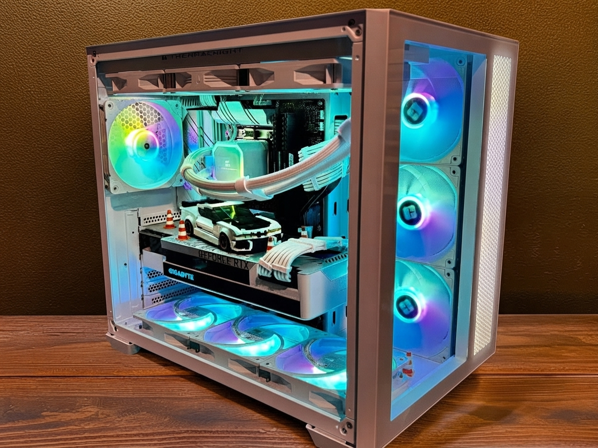
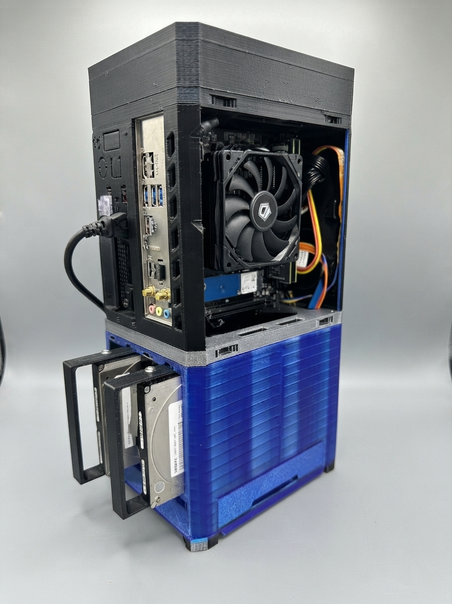

Building a PC: The Do's and Don'ts
October 2026
By DJ Biery
PC Building Quick Guide
From choosing the right hardware to getting a new system ready to use.
Before You Build: Choosing Hardware
Building a PC starts long before the first component is installed. Choosing hardware requires more than simply looking for the fastest processor or most powerful graphics card. Components need to be compatible with one another, and the entire system needs to fit within the available budget. A good build balances performance, reliability, compatibility, cooling, and future upgrade options. Taking the time to research each component before purchasing it can prevent problems that are much harder to fix after the parts arrive.

During the Build: Assemble Carefully
Building a computer is easier when every step is approached with patience instead of force. The motherboard manual is an important reference because it shows where components and connectors belong. A careful builder checks each connection, confirms that components are seated correctly, and takes time to troubleshoot instead of immediately assuming that something is broken. Good assembly habits can protect expensive hardware and make the first startup much less stressful.
Do
- Check CPU, motherboard, RAM, storage, case, and power-supply compatibility.
- Work on a clean surface and handle components carefully.
- Read the motherboard and case manuals before connecting unfamiliar parts.
- Make sure power cables and memory modules are fully seated.
- Keep track of screws, cables, and accessory parts during assembly.
Don't
- Do not force a component into a slot or connector.
- Do not forget motherboard standoffs when installing the motherboard.
- Do not overlook CPU-cooler installation or its protective film.
- Do not rush cable connections just to get the system running.
- Do not assume a failed first boot automatically means a component is defective.
After the Build: Operating System and Applications
Getting a computer to power on is only the beginning. After the hardware is assembled, the operating system, drivers, updates, and applications need to be configured. Installing the correct drivers and keeping the operating system updated helps the hardware operate properly, while monitoring temperatures and system stability can reveal problems early. A successful PC build is therefore not simply a collection of parts that turns on—it is a complete system that has been properly assembled, configured, tested, and maintained.

After-Build Checklist
- Install Windows or another operating system.
- Install chipset, graphics, network, and other required drivers.
- Run operating-system and hardware updates.
- Install security software and keep it updated.
- Install only applications that are needed.
- Check temperatures and test system stability.
- Back up important files once the system is ready.
Final Advice
The best PC builds are planned rather than rushed. Researching hardware before buying, assembling each component carefully, and properly configuring the finished system all contribute to a more reliable computer. Whether the goal is gaming, schoolwork, programming, networking, or general use, understanding the entire process makes it easier to make good decisions and solve problems when they appear.